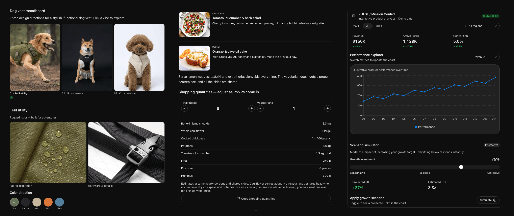
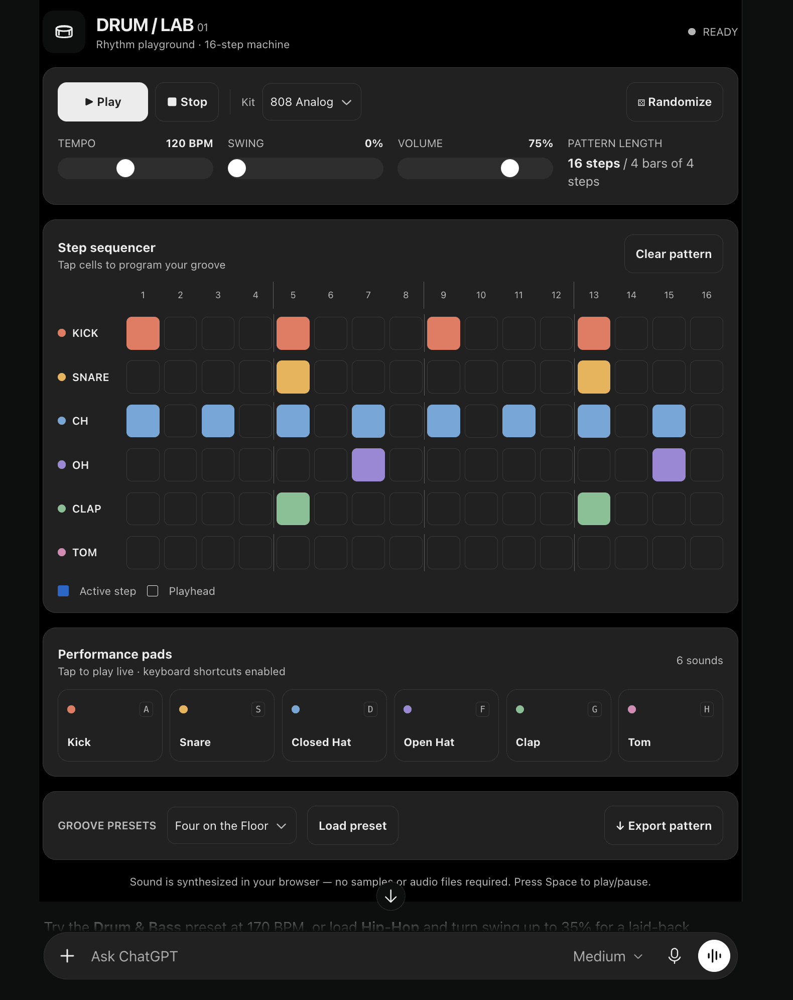

GPT-6带来的一项能力是智能UI：ChatGPT的回答里可以直接渲染交互界面，滑杆、表单、表格、图表、地图、产品卡片，一条回答里prose和组件混排。
这些组件响应操作不需要再调一次模型，而且用的是ChatGPT自己的设计系统画出来的，不是嵌个网页进来。这篇把它的实现链路扒了一遍。
模型输出的格式叫DIL：Markdown写prose，JSX风格标签写组件，JavaScript写状态和逻辑。比如一个团队套餐估算器，模型会写滑杆组件绑定seats状态，价格直接seats*29算出来。
为什么需要专用格式？因为模型是逐token写界面的。纯Markdown表达不了交互状态，纯HTML又太重且不安全，DIL是折中：声明式组件加一小撮JS，刚好够表达交互，又足够受限。
客户端永远不会直接执行模型写的东西。后端先把DIL编译成一个JS程序加一份JSON文档，跟消息存在一起（字段叫model_dil_v2）。编译这一步做了所有客户端本要重复做的事，一次编译，到处运行。

客户端拿到编译产物后分两拨干活：runtime执行程序，renderer负责画。模型写的代码不跑在ChatGPT页面里，而是加载一个隐藏iframe（runner.html），用allow-scripts沙盒加default-src 'none' 的CSP，再起一个Web Worker。
runtime是个小型的React风格reconciler：渲染组件、把hook状态存在keyed slot里，对比新旧树，差异编码成操作列表。它自己什么都不画，只产出操作。
ChatGPT页面把操作应用到自己的组件树上。每个CREATE实例化一个设计系统里的原生组件，变化带动画进来。页面只接受已知组件类型的操作，模型没法注入任意markup或样式，这是安全边界。
交互反向走：用户把滑杆拖到9，页面把handler标识和参数发给worker，worker调setSeats(9) 重渲染，返回更新操作。整个来回不经过模型。
模型能用什么组件，由目录（catalog）说了算。模型不从原始布局规则拼界面，而是从ChatGPT已知的组件里挑，用padding={3} 这类design token定样式。实测里编译器会删掉不认识的属性，比如icon上的fill和box上的gap="1"，并给出诊断。
流式传输界面比流式文本难：纯追加token表达不了结构变化。ChatGPT的做法是对结构化消息打补丁：raw文本、编译程序、数据三部分并排放着，通过SSE事件流（POST /backend-api/f/conversation）发JSON-Patch风格的更新，一次事件通常同时更新DIL文本和编译产物。
数据走旁路：工具返回的价格、地址这类用户可能据以行动的值，不经过模型，而是服务端在appData里单独填好，跟编译程序放在一起。模型只写请求或引用，避免模型抄错或编造数字。
原生组件覆盖不了所有需求，比如用Web Audio合成声音的鼓机。这时模型可以写AppBlock：一个自包含的HTML/CSS/JS小应用，嵌在回答里。Drum Lab就是例子：16步进音序器，带tempo、swing、音色包和导出。
AppBlock跑在可见iframe里，域名独立，走的还是ChatGPT应用宿主（Skybridge）那套机制。模型写的HTML被写进内层frame，跟主页面隔离。

交互出界的动作走GenUI对象：大部分操作不出回答，唯一跟模型通信的通道是issueNewTurn，发一条新用户消息，文本由程序按当前状态拼出来。比如选完风格颜色点按钮，拼出的就是“基于我的moodboard做狗背心详细设计”的完整prompt。
还有Markdown兜底：回答存一份，但老版本客户端跑不起来。服务端给每个编译产物配一份fallbackMarkdown， prose保留，图片产品引用地图走ChatGPT本来就支持的inline markup，交互部分压成静态文本。
粗糙之处也如实记录了：比如某些CSS属性在特定组件上不生效、流式中途的结构更新偶发闪烁。这些是逆向观察到的行为，OpenAI随时可能改实现，细节以官方文档为准。
参考：https://www.openui.com/blog/how-chatgpt-intelligent-ui-works